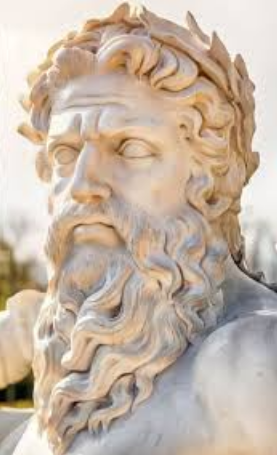
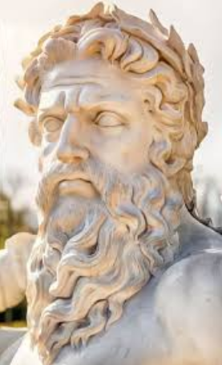

Greziar mitologian, Zeus (grekoz Ζεύς) edo Dias (Δίας, «errege jainkotiarra») jainkoen eta gizakiaren aita da eta Olinpiar jainkoen buruzagia: haren seme-alaba ez zirenek ere aita deitzen zioten. Jainkoen erregea zen eta unibertsoaren ikuskatzailea. Zeruaren eta trumoiaren jainkoa ere izanik, haren sinboloak tximista, arranoa, zezena eta haritza ziren. Haren oinordekotza indoeuropearraz aparte, Ekialde Hurbileko atributu ikonografiko batzuk ere lortu zituen, adibidez, aginte-makila edo zetroa. Artista greziarrek, gehienetan, Zeus bi modutan irudikatzen zuten: zutik, aurrera eginez eta eskuineko eskuan tximista bat duelarik, edo dotoretasunez eserita.
Kronos eta Rea titanen seme gazteena izan zen. Tradizio gehienetan, arreba Hera jainkosarekin ezkonduta agertzen da, baina Dodonako orakuluan emaztea Dione zuen, eta Iliadaren arabera, harekin Afrodita alaba izan zuten. Oso ezaguna da anitz maitale izan zituelako; horren ondorioz, jainko-jainkosa eta heroi asko haren seme-alabak izan ziren: Atenea, Apolo eta Artemisa, Hermes, Persefone, Dioniso, Perseo, Herakles, Helena, Minos eta Musak. Herarekin aldiz, Ares, Hebe eta Hefestoren aita izan zela esaten da.
Erromatarren Jupiterren baliokidea da, baita etruskoen Tinia eta egiptoarren Amon jainkoena ere. Gaur egun, Jainkoari buruz dugun irudia (bai izena, bai itxura) harengandik dator.
 
